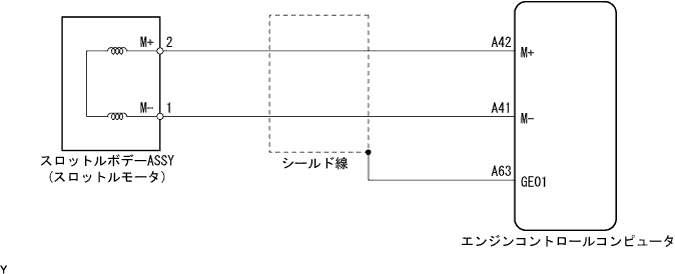
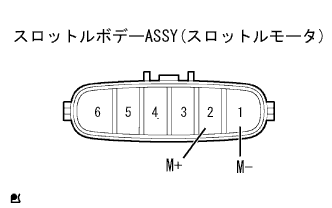
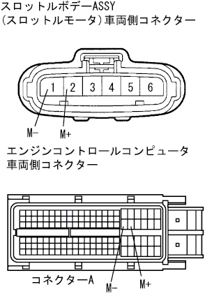

DTC P2102/41 Throttle Motor Open Circuit |
DTC P2103/41 Throttle Motor Short |
| DTC No. SAE/TCCS | DTC Detection Conditions 1. Diagnosis conditions 2. Malfunction status 3. Malfunction duration 4. Other | Inspection Area |
|---|---|---|
| P2102/41 |
|
|
| P2103/41 |
|
|

| Step 1 | Perform TaSCAN Active Test (Electronic Throttle Drive) |
Connect SST (TaSCAN) to DLC3.
Turn the IG ON and, following the SST (TaSCAN) screen display, select the Active Test item [Electronic Throttle Drive (Slow)] or [Electronic Throttle Drive (Fast)] from [Diagnosis Function Menu] → [Active Test].
| Active Test Command | Throttle valve condition |
|---|---|
| Throttle open | Throttle valve opens |
| Throttle closed | Throttle valve closes |
|
| ||||
| OK | ||
| ||
| Step 2 | Inspect Throttle Body Assembly |
 |
Disconnect the throttle body assembly (throttle motor) connector.
Using SST (Toyota electrical tester), measure the resistance between the terminals of the throttle body assembly.
| Tester Connection (Terminal Name) | Condition | Standard |
|---|---|---|
| 2(M+) - 1(M-) | 20°C | 0.3 to 100Ω |
|
| ||||
| OK | |
| Step 3 | Inspect Wire Harness and Connector (Engine Control Computer - Throttle Body Assembly (Throttle Motor)) |
Reference |
Disconnect engine control computer connector A and the throttle body assembly (throttle motor) connector.
Using SST (Toyota electrical tester), measure the resistance between the engine control computer and the throttle body assembly (throttle motor) vehicle side connector terminals. (For Terminals of ECU, see)
| Tester Connection (Terminal Name) | Condition | Standard |
|---|---|---|
| A42(M+) - 2(M+) | Always | Below 1 Ω |
| A41(M-) - 1(M-) | Always | Below 1 Ω |
| A42 (M+) and 2 (M+) - Body ground | Always | 10k Ω or higher |
| A41 (M-) and 1 (M-) - Body ground | Always | 10k Ω or higher |
|
| ||||
| OK | |
| Step 4 | Clear DTC |
Connect SST (TaSCAN) to DLC3.
Turn the IG ON and clear the DTCs following the SST (TaSCAN) screen display. (see)
| NEXT | |
| Step 5 | Check DTC |
Perform a road test.
Turn the IG ON and check for DTCs following the SST (TaSCAN) screen display. (see)
| Result | Proceed to |
|---|---|
| P2102/41, P2103/41 displayed | A |
| Normal code displayed | B |
)
|
| ||||
| A | ||
| ||